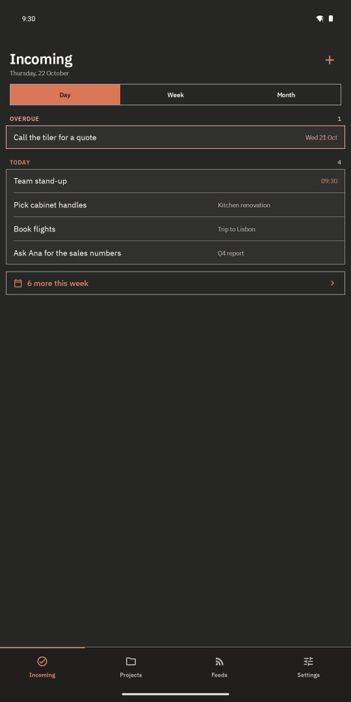
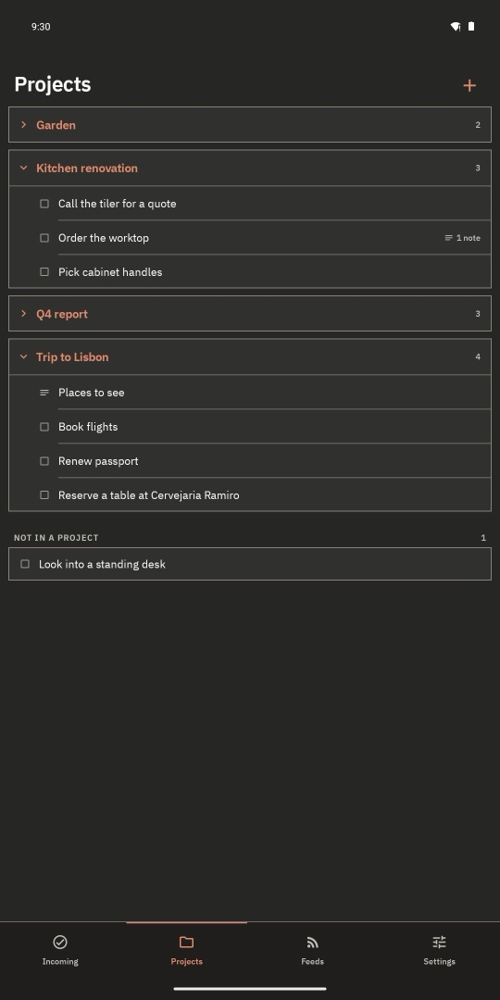

Tasks · Notes · Calendar
Get it done.
Keep it yours.
A task app where what you capture ends up done, not piled up. Your phone and your Mac keep each other current over your own Wi-Fi. No account, no cloud, nobody in between.
- Works fully offline
- No sign-in, ever
- Android 8.0 and newer


Synced, without a cloud
Phone and Mac talk to each other directly on your network. There is no server of ours to sign up to, pay for, or lose your data to.
Built to finish things
Every screen points at the same question: what do I do next? Capturing is fast, filing is one tap, and done means gone from the list.
A calendar that acts like one
Events sit beside your tasks with their times. Yesterday's meeting isn't "overdue" — it's over. Weeks roll from today, not from Monday.
Capture
Get it out of your head. Sort it later.
Four big buttons within thumb reach: text, photo, voice memo, document. One question when you save, and you're back to what you were doing.
- Task or note? The same photo can mean "do something about this" or "keep this". Only you know which, so the app asks.
- A date at the moment you know it. Add one while it's still in your head — or skip it.
- Without opening the app. A home-screen widget and the share menu drop text straight in, even offline.
- Projects as plain containers. File tasks and notes into them, put a note under a task, keep the details where the work is.


Next
Opens on today. Plans a week or a month when you ask.
A flat list sorted by date makes you read every row to find where today ends. Next does that reading for you.
- Overdue on its own. "Should already have happened" calls for a different decision than "happens today", so it gets its own heading — in every view.
- Tomorrow never ambushes you. The Day view tells you how many more things are due this week, one tap from seeing them.
- A week at a glance. Seven days in a strip, a dot for each thing due.
- Mark done from a long-press or from the item itself — and it leaves the list.



Calendar
The calendar works the way a calendar should.
Events and tasks share the same days, because that's how your day actually looks. But they are not the same thing, and the app never pretends they are.
Sync
Every device current. No cloud in the middle.
Pair your phone with the Mac app once, by typing a short code. From then on they keep each other up to date whenever they share a network — at home or at the office.
- Direct and encrypted. Traffic between your devices is encrypted and pinned to the certificate they exchanged when you paired.
- Nothing comes back from the dead. Every edit carries a time and the newest one wins; deletions travel too.
- Offline is normal. The phone keeps a full copy of your data in an encrypted database. On a plane, in a basement — it just works.
And also
The rest, briefly.
An assistant on your terms
Ask about your projects, typed or spoken, or ask for a review of one item. The phone talks straight to a model server you run on your network. Optional — everything else works without it.
Leaving Todoist?
A one-time import brings your tasks across. Google Calendar comes in the same way from your private iCal address. Tokens are used once and not kept.
Open an item, see it all
What it is, when it's due, the photo or memo it carries, and the notes filed under it — on one sheet.
Sand by day, moss by night
Two themes drawn from five earth tones, following your system. Plain text on plain paper, and square edges. Try the toggle at the top.
Privacy
We can't lose your data. We never have it.
HubidubiOS has no servers. Your tasks, notes, photos and recordings stay on your devices and travel only between them. The camera and microphone are used only when you take a photo or record a memo.
- No account or sign-in
- No ads, analytics or trackers
- No cloud, no server of ours
This website doesn't track you either: no cookies, no analytics, and the fonts are served from here. Read the privacy policy.
Get it
Start on your phone. Add the Mac when you want it.
The Android app is complete on its own. Pair the Mac app to have everything on a big screen and a second copy of your data.
Android
Projects, Next, the assistant and import, with everything new under one +. Widget and share menu included.
Android 8.0+ · camera and microphone optional
Get it onGoogle PlayMac
The same screens with a keyboard. Pair it with your phone by a typed code, on the same Wi-Fi.
macOS · same network as the phone
Download for MacDo I need a Mac?
No. The phone app works entirely on its own. Sync starts when you pair a second device.
Does sync work over the internet?
Devices sync when they can reach each other on the same network. That is the point: there's no relay server in the middle to trust or to go down.
What happens if I edit the same task on both devices?
Each edit carries the time it was made, and the newer one wins on both sides. A deletion is an edit too, so something you removed stays removed.
What if I lose my phone?
If you had it paired, your Mac still has everything; pair a new phone and it fills back up. The data on the lost phone sits in an encrypted database.
What is the assistant, and where does my data go?
It's an optional chat about your projects. You point the app at a model server you run yourself — any OpenAI-compatible endpoint on your network — and the phone sends your question and the relevant items there directly. We never see any of it.
Can I bring my tasks from Todoist or my Google Calendar?
Yes, once. In Settings → Import, paste a Todoist API token or your calendar's private iCal address, preview what would come in, and confirm. The token isn't stored and there's no ongoing link to the other service.